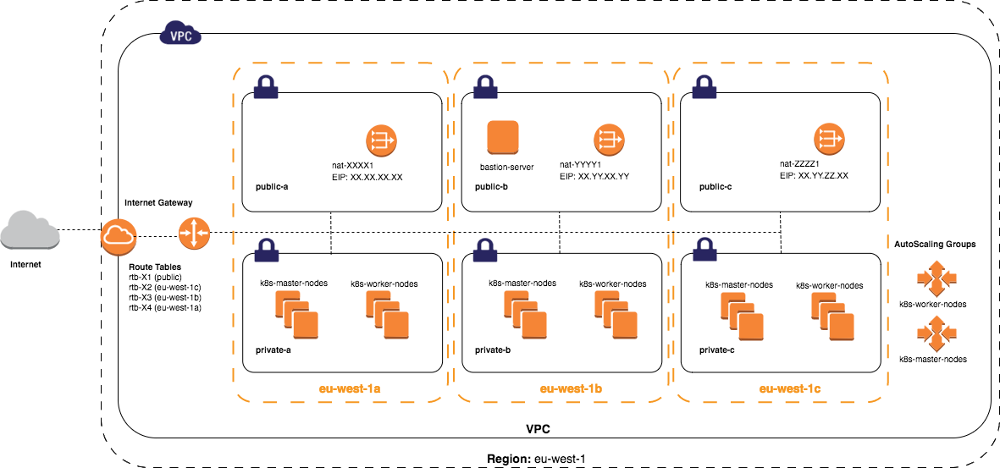

07 自动化部署分布式容器云平台实践
概述
当前云计算场景中部署一套 Kubernetes 集群系统是最常见的容器需求。在初期阶段，大量的部署经验都依赖于前人设计实现的自动化部署工具之上，比如 Ansible。但是为什么这样的自动化工具并不能彻底解决所有 Kubernetes 集群的安装问题呢，主要的矛盾在于版本的升级更新动作在分布式系统的部署过程中，由于步骤复杂，无法提供统一的自动化框架来支持。
Ansible 需要撰写大量的有状态的情况来覆盖各种可能发生的部署阶段并做出判断。这种二次判断的操作对于 Ansible 这种自动化工具是无法适应的。Ansible 这样的工具期望行为一致性，如果发生可能发生的情况，将无法有效的保证后续的步奏能有效的安装。通过本文分享的 Kubernetes 社区中提供的安装套件可以帮助大家结合实践现在适合自己的部署分布式容器云平台的方法和工具链。
Kubernetes Operations（kops）
生产级别 k8s 安装、升级和管理
Ansible 部署 k8s 需要投入很多精力来维护集群知识的 roles 和 inventory，在日常分布式系统中会带来很多不确定的异常，很难维护。所以社区提供了 kops，期望能像 kubectl 一样来管理集群部署的问题。目前实现了 AWS 的支持，GCE 支持属于 Beta 阶段，vSphere 处于 alpha 阶段，其他平台属于计划中。对于中国区的 AWS，可以选用 cn-north-1 可用区来支持。

1、配置 AWS 信息
AWS Access Key ID [None]:
AWS Secret Access Key [None]:
Default region name [None]:
Default output format [None]:
注意需要声明可用区信息
> export AWS_REGION=$(aws configure get region) > > > ``` 2、DNS 配置 因为工作区没有 AWS 的 Route53 支持，我们通过使用 gossip 技术可以绕过去这个限制。 3、集群状态存储 创建独立的 S3 区来存储集群安装状态。 ```shell aws s3api create-bucket --bucket prefix-example-com-state-store --create-bucket-configuration LocationConstraint=$AWS_REGION
4、创建第一个 k8s 集群
在中国区执行安装的时候，会遇到网络不稳定的情况，使用如下的环境声明可以缓解此类问题：
## Setup vars
KUBERNETES_VERSION=$(curl -fsSL --retry 5 "https://dl.k8s.io/release/stable.txt")
KOPS_VERSION=$(curl -fsSL --retry 5 "https://api.github.com/repos/kubernetes/kops/releases/latest" | grep 'tag_name' | cut -d\" -f4)
ASSET_BUCKET="some-asset-bucket"
ASSET_PREFIX=""
# Please note that this filename of cni asset may change with kubernetes version
CNI_FILENAME=cni-0799f5732f2a11b329d9e3d51b9c8f2e3759f2ff.tar.gz
export KOPS_BASE_URL=https://s3.cn-north-1.amazonaws.com.cn/$ASSET_BUCKET/kops/$KOPS_VERSION/
export CNI_VERSION_URL=https://s3.cn-north-1.amazonaws.com.cn/$ASSET_BUCKET/kubernetes/network-plugins/$CNI_FILENAME
## Download assets
KUBERNETES_ASSETS=(
network-plugins/$CNI_FILENAME
release/$KUBERNETES_VERSION/bin/linux/amd64/kube-apiserver.tar
release/$KUBERNETES_VERSION/bin/linux/amd64/kube-controller-manager.tar
release/$KUBERNETES_VERSION/bin/linux/amd64/kube-proxy.tar
release/$KUBERNETES_VERSION/bin/linux/amd64/kube-scheduler.tar
release/$KUBERNETES_VERSION/bin/linux/amd64/kubectl
release/$KUBERNETES_VERSION/bin/linux/amd64/kubelet
)
for asset in "${KUBERNETES_ASSETS[@]}"; do
dir="kubernetes/$(dirname "$asset")"
mkdir -p "$dir"
url="https://storage.googleapis.com/kubernetes-release/$asset"
wget -P "$dir" "$url"
[ "${asset##*.}" != "gz" ] && wget -P "$dir" "$url.sha1"
[ "${asset##*.}" == "tar" ] && wget -P "$dir" "${url%.tar}.docker_tag"
done
KOPS_ASSETS=(
"images/protokube.tar.gz"
"linux/amd64/nodeup"
"linux/amd64/utils.tar.gz"
)
for asset in "${KOPS_ASSETS[@]}"; do
kops_path="kops/$KOPS_VERSION/$asset"
dir="$(dirname "$kops_path")"
mkdir -p "$dir"
url="https://kubeupv2.s3.amazonaws.com/kops/$KOPS_VERSION/$asset"
wget -P "$dir" "$url"
wget -P "$dir" "$url.sha1"
done
## Upload assets
aws s3api create-bucket --bucket $ASSET_BUCKET --create-bucket-configuration LocationConstraint=$AWS_REGION
for dir in "kubernetes" "kops"; do
aws s3 sync --acl public-read "$dir" "s3://$ASSET_BUCKET/$ASSET_PREFIX$dir"
done
创建集群的时候加上参数：
--kubernetes-version https://s3.cn-north-1.amazonaws.com.cn/$ASSET_BUCKET/kubernetes/release/$KUBERNETES_VERSION
另外，还有一些镜像是托管在 gcr.io 中的，比如pause-amd64， dns等。需要自行下载并提交部署到所有机器上才能做到离线安装。这里有一个技巧是通过自建的 Dockerfile 中加上
FROM gcr.io/google_containers/pause-amd64
一行，并通过 Docker Cloud 自动构建的功能，把 pause-amd64 这样的镜像同步到 docker hub 中，方便国内的 AWS 主机可以下载使用。
kubeadm——官方安装 k8s 集群命令行工具
kubeadm 主要的目的就为简化部署集群的难度，提供一键式指令如：kubeadm init 和 kubeadm join 让用户在安装集群的过程中获得平滑的用户体验。
kubeadm init
初始化的过程被严格定义成多个阶段来分步骤跟踪集群的状态。有些参数必须需要调优：
–apiserver-advertise-address 这个地址是用来让 API Server 来通告其他集群组件的 IP 地址。
–apiserver-bind-port 这个端口是 API Server 的端口，默认是6443。
–apiserver-cert-extra-sans 附加的主机名字或地址，并加入到证书中。例如：
--apiserver-cert-extra-sans=kubernetes.example.com,kube.example.com,10.100.245.1
–cert-dir 证书地址，默认在 /etc/kubernetes/pki。
–config kubeadm 的配置文件。
–dry-run 这个参数告诉 kubeadm 不要执行，只是显示执行步骤。
–feature-gates 通过键值对来激活 alpha/experimental 的特性。
–kubernetes-version 集群初始化版本号。
–node-name 主机名称。
–pod-network-cidr 选择 pod 的网络网段。
–service-cidr 服务 IP 地址网段。
–service-dns-domain 服务域名，默认 cluster.local。
–skip-preflight-checks 默认 kubeadm 运行一系列事前检查来确认系统的有效性。
–skip-token-print 去掉默认打印 token 的行为。
--token指定 token 的字符串。–token-ttl 配置 token 的过期时间，默认24个小时。
kubeadm join
两种连接方式：
- 通过共享 token 和 ip 地址和 root CA key 来加入集群。
kubeadm join --discovery-token abcdef.1234567890abcdef --discovery-token-ca-cert-hash sha256:1234..cdef 1.2.3.4:6443
- 使用配置文件
kubeadm join --discovery-file path/to/file.conf
kubeadm config
kubeadm v1.8.0+ 将自动创建 ConfigMap 提供kubeadm init 需要的所有参数。
kubeadm reset
取消 kubeadm init 或者 kubeadm join 对集群做的改动。
kubeadm token
管理集群需要的 token。
还有，kubeadm 可以配置使用其他 docker runtime，比如 cri-o 容器引擎。
$ cat > /etc/systemd/system/kubelet.service.d/20-cri.conf <<EOF
Environment="KUBELET_EXTRA_ARGS=--container-runtime=remote --container-runtime-endpoint=$RUNTIME_ENDPOINT --feature-gates=AllAlpha=true"
EOF
$ systemctl daemon-reload
通过初始化后，就可以调用 cri-o 引擎了。
kubeadm 配置自定义镜像
默认，kubeadm 会拉取 gcr.io/google_containers 下的镜像。必须通过配置文件覆盖默认的镜像仓库的地址。
- imageRepository 去掉。gcr.io/google_containers 的值。
- unifiedControlPlaneImage 提供面板镜像。
- etcd.image 是 etcd 的镜像。
kubeadm 支持云端集成
通过指定–cloud-provider 参数可以实现云端 k8s 集群的部署。比如阿里云就实现了一套 cloud provider 帮助用户在阿里云一键部署一套集群。从当前社区的热度来看，k8s 社区重点专注在kubeadm的扩展，第三方的 cloud provider 可以自行实现功能，kubeadm 可以通过参数的方式调用阿里云的基础组件。
总结
从 Ansible 自动化工具开始，K8S 集群作为典型的分布式集群系统安装范本，社区在不断的优化用户体验。我们期望集群能够自举的完成系统级配置，并且通过 kubeadm 的方式帮助用户简单的、平滑的升级集群。实现这个 kubeadm，可以帮助任意系统管理员不在为分布式系统的安装犯愁，只需要一行命令就可以完成集群的搭建。所有生产级别的经验都被固化在 kubeadm 的代码中，我们通过参数加以调优，实现集群的生产级别的部署工作。
© 2019 - 2023 Liangliang Lee. Powered by gin and hexo-theme-book.